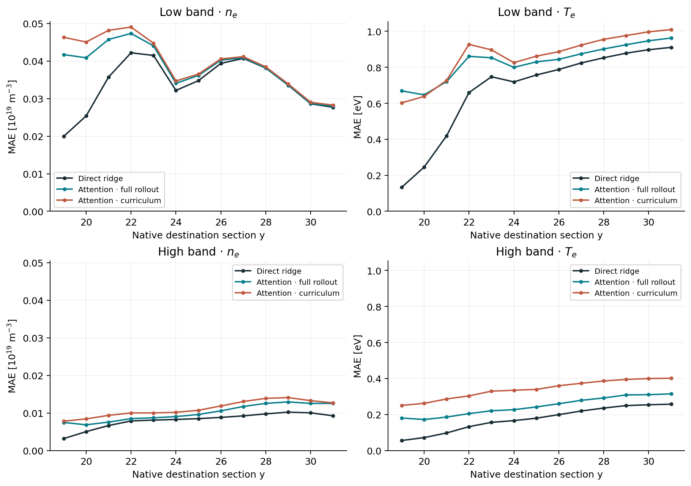

Open the archived study tables and route comparisons
1. Additional inputs helped the early ridge screen
At fixed y18 and the same x44–59 target cells, potential improved density and temperature predictions more than pressure alone. This was an early crop, not a demonstrated shear-isolated region.
| Input fields | Density MAE [10¹⁹ m⁻³] | Temperature MAE [eV] |
|---|
| nₑ, Tₑ | 0.01320 | 0.2996 |
| + φ | 0.01063 | 0.2658 |
| + Vᵢ | 0.01146 | 0.2810 |
| + Pₑ | 0.01314 | 0.2988 |
| All five | 0.01055 | 0.2622 |
Table 1. Outer y31 native-cell error; outputs remain nₑ,Tₑ. “+” adds one field to nₑ,Tₑ. All five means nₑ,Tₑ,φ,Pₑ,Vᵢ. Pressure is derived from density and temperature, so it is not an independent exact measurement.
2. Accurate neighboring predictions do not automatically compose
| Radial band | Direct y18→31 [eV] | Predicted chain [eV] | Actual y30→31 [eV] |
|---|
| low | 0.9098 | 0.9581 | 0.0212 |
| high | 0.2256 | 0.2237 | 0.0081 |
Table 2. Three-field band ridge, y31 temperature MAE [eV]. Low=x16–28; high=x48–60. The last column receives an extra downstream observation; it diagnoses local learnability and is not an upstream-only competitor.
━━ Direct: only y18 observed · ┄ Chained: predicted predecessor · ·· True-input: actual predecessor
Figure 6. Three-field band ridge. Separate panels avoid mixing field units and radial populations. True-input is an extra-observation diagnostic; its low error is not a deployable chain score. Native-cell MAE over all 648 evaluation frames. Index spacing is not uniform physical distance.| Full-width three-field route | Ridge Tₑ MAE [eV] | U-Net Tₑ MAE [eV] |
|---|
| Direct | 0.5403 | 0.5710 |
| Specialist chain | 0.5727 | 0.7062 |
| Shared chain | 0.6979 | 0.6973 |
Table 3. Full-width y31 comparison, x16–63. These values are not directly comparable to one-band values above. Both architectures predict the same three fields; their training budgets are not compute-matched.
3. Longer attention training did not resolve the endpoint gap
All eight first-step arms now have completed training records. High-band endpoint temperature MAE spans 0.339–0.360 eV, versus 0.226 eV for same-band direct ridge. Low-band attention spans 0.950–0.996 eV, versus 0.910 eV for ridge. A pass cap is not proof of convergence.
Eight-arm results and training selection
| Band | Pretraining | Rollout loss | y31 Tₑ MAE [eV] | Passes / selected |
|---|
| low | mixed | equal | 0.9938 | 5 / 2 |
| low | mixed | first4 | 0.9957 | 5 / 2 |
| low | first | equal | 0.9836 | 5 / 2 |
| low | first | first4 | 0.9500 | 10 / 9 |
| high | mixed | equal | 0.3393 | 8 / 5 |
| high | mixed | first4 | 0.3404 | 8 / 5 |
| high | first | equal | 0.3601 | 8 / 5 |
| high | first | first4 | 0.3469 | 10 / 7 |
Mixed = balanced teacher-forced transitions; first = specialize on y18→19. Equal = equal rollout-step weights; first4 = first step weighted fourfold. Every final checkpoint uses the same unweighted full-rollout validation criterion. The low/first/first4 arm is explicitly marked unconverged in its metadata.
A separate frozen-model intervention replaced the first prediction with ridge or exact y19. It did not clearly improve y31. Better initialization alone did not rescue that frozen chain; this is distinct from retraining.
4. Small native windows: neighboring rows help ridge; curriculum has no consistent win

Figure 7. Five-row × nine-cell observations; identical central-row targets within each band. All 648 regression frames. Curves compare direct ridge, full-rollout attention and curriculum attention. These are historical fixed-band local-window fits, not the new regional benchmark. PDF · SVG.| Band | Input rows | Model | Density MAE [10¹⁹ m⁻³] | Temperature MAE [eV] |
|---|
| low | 1 | Ridge | 0.02770 | 0.9540 |
| low | 1 | Attention · full | 0.02793 | 1.0294 |
| low | 1 | Attention · curriculum | 0.02810 | 1.0016 |
| low | 5 | Ridge | 0.02767 | 0.9106 |
| low | 5 | Attention · full | 0.02792 | 0.9628 |
| low | 5 | Attention · curriculum | 0.02826 | 1.0099 |
| high | 1 | Ridge | 0.01227 | 0.2734 |
| high | 1 | Attention · full | 0.01248 | 0.2956 |
| high | 1 | Attention · curriculum | 0.01241 | 0.4039 |
| high | 5 | Ridge | 0.00924 | 0.2575 |
| high | 5 | Attention · full | 0.01254 | 0.3147 |
| high | 5 | Attention · curriculum | 0.01267 | 0.4016 |
Table 4. Native y31 errors on identical central-row cells within each band. Five-row models also predict their neighboring rows. Curriculum uses horizons 1,2,4,8,13 over successive two-pass stages. No broad neural advantage is established; low-band density remains difficult for every listed method.